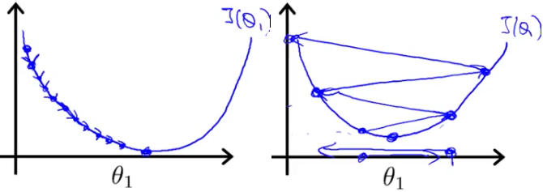

中文 AI 学习路线图
从数学、机器学习、深度学习基础，到大语言模型、RAG、Agent、编程智能体和多模态工程实践。
这个仓库不是资料堆砌，而是帮你判断现在先学什么、学到什么程度、如何进入可运行的 AI 应用。
从 Python、NumPy、Pandas、sklearn 到 PyTorch 和 LLM API。
Prompt、Embedding、RAG、评估、微调和模型调用边界。
工具调用、工作流、MCP、记忆、Harness、Loop 和生产化。
神经网络、优化、CNN、RNN、注意力机制和训练策略。
优先阅读这些章节，可以快速理解仓库最新的学习主线。

学习建议：先跑通最小闭环，再按问题补理论。能部署、能评估、能定位错误，比只看懂概念更重要。